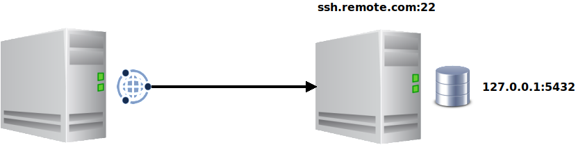
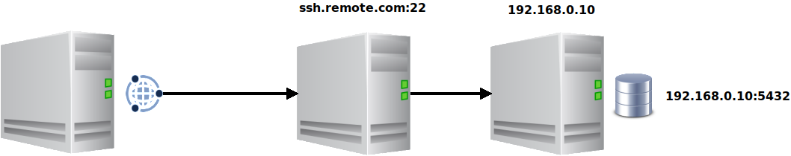

Criar Utilizadores e Ligações
Iniciar sessão como o utilizador admin
O OmniDB vem apenas com o utilizador admin. Se estiver a usar a versão servidor, a
primeira coisa a fazer é iniciar sessão como admin com a palavra-passe aleatória de utilização
única que o omnidb-server mostrou na sua saída de registo ao criar uma nova base de dados da
aplicação (a linha que contém initial login: admin / …) e, em seguida, alterá-la em
Definições. Se essa palavra-passe se perder, pode repô-la com omnidb-server --set-password admin. Após 10 tentativas de início de sessão falhadas para o mesmo nome de utilizador ou o mesmo
endereço IP do cliente, o início de sessão fica bloqueado durante 15 minutos. A aplicação de ambiente de trabalho não tem qualquer início de sessão: funciona como
um único utilizador local, pelo que tudo o que diz respeito à gestão de utilizadores descrita
abaixo simplesmente não existe lá.
Orientar-se na interface
Toda a área de trabalho é comandada a partir da barra vertical de ícones na margem esquerda da janela: Boas-vindas, Ligações (o ícone da ficha), Base de dados, Monitorização, Notificações, Permissões, Utilizadores ligados e Snippets no topo, e Introdução, Conta (apenas na versão servidor) e Definições (a roda dentada) em baixo. Passar o rato sobre um ícone mostra o seu nome. Consulte Gerir Bases de Dados para ver como as secções funcionam em conjunto, e Definições e Idiomas para o idioma da interface e outras preferências.
Criar outro utilizador
Abra Settings (Definições) no fundo da barra, escolha a categoria Account (Conta) e clique em Manage Users (Gerir utilizadores). Só um super-utilizador tem esse botão: nas definições de um utilizador normal a secção Account nem sequer aparece.
A janela User management (Gestão de utilizadores) lista os utilizadores existentes. Clique em Add new user (Adicionar novo utilizador, o ícone da pessoa com um mais) para inserir uma nova linha de utilizador vazia, mostrada como (pending info) até a preencher. Preencha o Nome de utilizador e a Nova palavra-passe, ative Superutilizador? se o novo utilizador o deve ser e clique em Save (Guardar). Pode criar tantos utilizadores quantos quiser, editar os existentes e eliminar um clicando na cruz vermelha na coluna de ações.
Para terminar a sessão, clique no ícone Account (Conta, a pessoa no fundo da barra) e depois em Sign out (Terminar sessão).
Eliminar um utilizador, ou retirar-lhe o estatuto de superutilizador, tem efeito imediato, incluindo nas sessões desse utilizador que já estejam abertas.
A secção Connections
Clique no ícone da ficha na barra. As ligações são uma secção completa da área de trabalho e não uma janela emergente: uma vista dividida com a lista de ligações guardadas na barra lateral esquerda e, à direita, o formulário e os botões da ligação selecionada.
Cada linha da lista mostra o ícone do motor de base de dados, o nome da ligação e, por baixo, o
utilizador@servidor:porta para onde aponta (ou a cadeia de ligação, ou o destino SSH no
caso de uma ligação de terminal). Um pequeno ponto colorido indica o ambiente da ligação e um ícone
de chave assinala uma ligação que passa por um túnel SSH.
Criar ligações
O OmniDB suporta PostgreSQL, MySQL, MariaDB, Oracle, MS SQL Server, Firebird e SQLite, além de um tipo de ligação Terminal que abre uma shell SSH em vez de uma base de dados. A lista Tipo de ligação mostra primeiro o PostgreSQL, depois os restantes por ordem alfabética e, por último, Terminal.
No caso do SQLite, a ligação aponta para um ficheiro de base de dados (na máquina onde o
omnidb-server é executado); se o ficheiro ainda não existir, o Testar ligação indica-o
e o ficheiro é criado quando usar a ligação pela primeira vez. Num servidor multiutilizador, as ligações
SQLite estão reservadas a superutilizadores, e alguns parâmetros da cadeia de ligação do PostgreSQL que leem
ficheiros no servidor são rejeitados — consulte Segurança e Servidor
Multiutilizador.
O botão + por baixo da lista cria uma ligação. Escreva o nome no cabeçalho do formulário
à direita, escolha o Connection Type (tipo de ligação) e preencha o cartão
Host Connection Info (dados do servidor): Server, Port,
Database, User e, opcionalmente, User Password. Em vez desses campos
individuais pode preencher uma única Connection string (cadeia de ligação, por exemplo
postgresql://postgres@localhost:5432/postgres) e deixar o resto em branco. No fim,
clique em Save (Guardar) no canto superior direito do formulário.
O Test Connection (Testar ligação), ao lado, experimenta a ligação sem a abrir e comunica Connection successful. ou o erro exato devolvido pela base de dados. O botão − por baixo da lista elimina a ligação selecionada; fica desativado para uma ligação que esteja aberta num separador.
Palavras-passe
O campo User Password (palavra-passe do utilizador) é opcional e as duas hipóteses comportam-se de forma diferente:
- Preenchido: a palavra-passe é guardada na própria base de dados de configuração do OmniDB e usada automaticamente sempre que abrir a ligação. É cifrada (AES-256-GCM) antes de ser gravada nesse ficheiro, com uma chave guardada no cofre de segredos do próprio sistema operativo (Keychain no macOS, Credential Manager no Windows, Secret Service no Linux) e não no ficheiro em si — pelo que o ficheiro da base de dados sozinho já não chega para ler as palavras-passe que contém. Se não existir esse cofre, o OmniDB recorre a um ficheiro de chave guardado ao lado da base de dados.
- Deixado em branco: não é guardado nada e o OmniDB pede a palavra-passe ao abrir a ligação. O que escrever fica apenas na memória do servidor, para a sua sessão e essa ligação, durante 30 minutos — depois disso o OmniDB volta a pedi-la.
No caso do PostgreSQL, o OmniDB procura ainda a palavra-passe no seu ficheiro
.pgpass no momento da ligação, escolhendo a mesma entrada que a libpq escolheria — uma
ligação sem palavra-passe guardada pode assim abrir-se sem qualquer pergunta. Na aplicação macOS em
sandbox, a caixa da palavra-passe oferece Grant access to .pgpass… (Conceder acesso ao
.pgpass): indica o ficheiro uma vez e, a partir daí, cada ligação obtém dele a sua própria
palavra-passe.
Se a base de dados recusar a tentativa, a caixa permanece no ecrã com o erro que o OmniDB recebeu (fe_sendauth: no password supplied, uma falha de autenticação, um servidor em baixo, etc.), para que possa corrigir a palavra-passe e tentar de novo.
Importar ligações a partir do .pgpass
O ícone de importação de ficheiro, junto aos botões + e −, lê um ficheiro
.pgpass e cria uma ligação PostgreSQL por cada linha concreta que ele contenha, como
uma simples cadeia postgresql://utilizador@host:porta/bd sem palavra-passe guardada: a
ideia é continuar a autenticar-se a partir desse ficheiro em vez de copiar palavras-passe para
dentro do OmniDB. As linhas com caracteres universais (*) são ignoradas, tal como
qualquer linha que já corresponda a uma ligação existente.
Organizar a lista
- Ordem: arraste uma linha para qualquer posição da lista. A disposição é guardada por utilizador e sobrevive tanto a um recarregamento como a um reinício. As ligações criadas depois são acrescentadas no fim.
- Grupos: o seletor no topo da barra lateral limita a lista a um único grupo. + Group cria um grupo e o botão … ao lado oferece Rename (Mudar o nome), Manage Connections (Gerir ligações: transforma as linhas em caixas de seleção para escolher que ligações pertencem ao grupo, confirmando com Save changes) e Delete (Eliminar).
- Ligações públicas: o interruptor Public connection? (Ligação pública?) do formulário torna a ligação utilizável por todos os outros utilizadores do OmniDB. Só o seu proprietário a pode editar; os outros utilizadores nunca veem a palavra-passe guardada (uma palavra-passe dentro da cadeia de ligação fica mascarada para eles), e o seu Testar ligação testa sempre o servidor guardado. O interruptor Public (n) no fundo da barra lateral mostra ou esconde na sua lista as ligações públicas de outros utilizadores.
- Ambiente: marcar uma ligação como Production, UAT, Development ou Archive colore o seu ponto na lista e a margem do seu separador aberto — é sobretudo um aviso de segurança, para que pegar no separador errado seja imediatamente visível.
Abrir uma ligação
Clique em Connect (Ligar) no formulário, ou faça simplesmente duplo clique numa linha da lista, e o OmniDB abre-a num novo separador exterior de ligação (Connection Outer Tab), como veremos no capítulo seguinte. Clicar com o botão direito numa linha abre um menu de contexto (Connect/Edit/Delete — Delete não aparece numa ligação já aberta) e clicar com o botão direito num espaço vazio da lista oferece New Connection/Refresh.
Utilizar túneis SSH
O OmniDB permite ligar-se a qualquer base de dados remota através de túneis SSH. Assinale Use SSH tunnel (Utilizar túnel SSH) no formulário da ligação: isso ativa os campos por baixo:
- SSH Server: o servidor a que se liga por SSH. A sua chave de anfitrião já tem de constar
do ficheiro
~/.ssh/known_hostsdo utilizador do sistema operativo que executa o OmniDB; caso contrário, o túnel é recusado — consulte Segurança e Servidor Multiutilizador; - SSH Port: a porta do servidor SSH (a predefinição é 22, mas pode ser qualquer porta);
- SSH User: o nome de utilizador do sistema operativo com que se liga ao servidor SSH;
- Password/Passphrase (Palavra-passe / frase-passe): a palavra-passe do utilizador do sistema operativo (ou a frase-passe da chave abaixo). Se a deixar em branco, o OmniDB pede-a sempre que o túnel é aberto, sem a guardar. Se preencher o campo SSH Key Text File, a palavra-passe é opcional;
- SSH Key Text File (Ficheiro de texto da chave SSH): o conteúdo da chave SSH privada local com que se pode ligar ao servidor SSH. O OmniDB lê o ficheiro que escolher e guarda o seu texto, não o ficheiro. Se preencher este campo, também pode preencher Password/Passphrase, mas nesse caso será a frase-passe da chave privada SSH.
Tudo o que aqui guardar — palavra-passe SSH, frase-passe e texto da chave — vai parar à mesma base de dados de configuração local do OmniDB onde ficam as palavras-passe das bases de dados, cifrado da mesma forma.
Ao usar túneis SSH também tem de preencher todos os campos da base de dados em conformidade. Mas, em vez de serem relativos ao servidor OmniDB, serão relativos ao servidor SSH. Isto pode acontecer em 2 cenários, explicados a seguir.
Se a base de dados estiver dentro do mesmo servidor a que se liga por SSH, terá uma situação como esta:

Neste cenário, o Server da base de dados será 127.0.0.1, pois a base de
dados está na mesma máquina que o SSH Server.
Mas a base de dados pode estar fora do servidor SSH, assim:

Aqui o Server da base de dados tem de ser 192.168.0.10, pois é o endereço
com que o servidor SSH alcança o servidor de base de dados.